옷과 신발을 빼고 몸 형태만 남긴 세 방향 그림입니다. 옷을 지워 달라는 요청 뒤에 저장되었지만 그 요청에 직접 답한 파일인지는 확인되지 않았습니다.
파일에 남은 저장 시각: 2026-11-04T09:39:04.641467+00:00. 실제 작업 완료 시각과는 다를 수 있습니다.
초기 자료 92개 중 공개용으로 고른 생성 그림 24개입니다. 나머지 68개는 버리지 않고 공개를 보류해 따로 보관했습니다. 그림이 있다는 것이 학습에 써도 된다는 포괄적인 허가는 아닙니다.
각 그림이 원 대화의 어느 첨부파일이었는지는 확인되지 않았습니다. 설명은 보관된 이미지 관찰 기록을 쉬운 말로 옮긴 것입니다. 그림에 적힌 등신비도 실제 측정값이라고 단정하지 마세요.
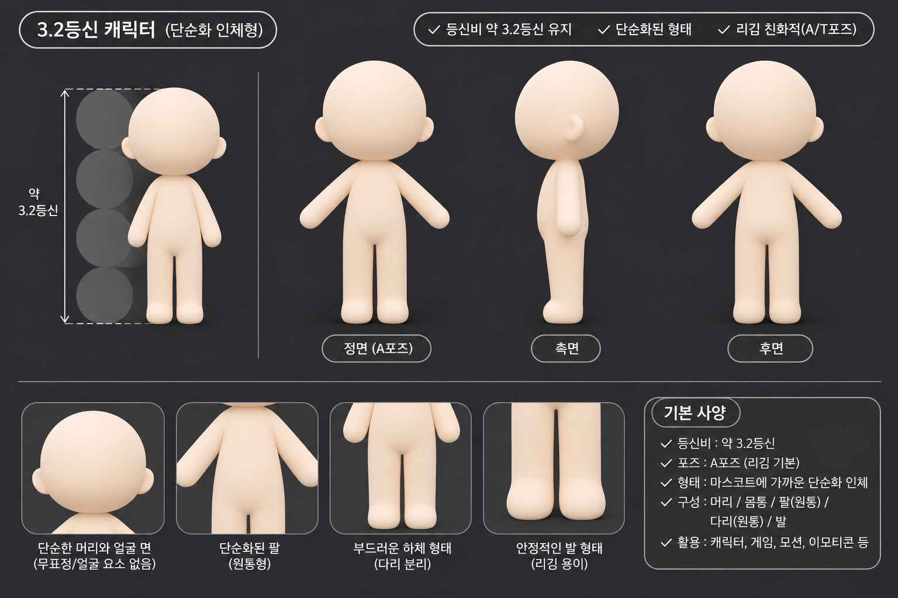
큰 둥근 머리와 짧은 몸을 앞·옆·뒤에서 보여줍니다. 팔은 몸통에서 벌렸습니다. 그림에 적힌 3.2등신 비율은 따로 재어 확인하지 않았습니다.
파일에 남은 저장 시각: 2026-11-04T09:36:11.804461+00:00. 실제 작업 완료 시각과는 다를 수 있습니다.
옷과 신발을 빼고 몸 형태만 남긴 세 방향 그림입니다. 옷을 지워 달라는 요청 뒤에 저장되었지만 그 요청에 직접 답한 파일인지는 확인되지 않았습니다.
파일에 남은 저장 시각: 2026-11-04T09:39:04.641467+00:00. 실제 작업 완료 시각과는 다를 수 있습니다.

007번보다 팔다리가 길고 가늘어졌습니다. 그림의 3.2등신 표시가 정확한지는 따로 재지 않았습니다.
파일에 남은 저장 시각: 2026-11-04T09:37:12.127321+00:00. 실제 작업 완료 시각과는 다를 수 있습니다.
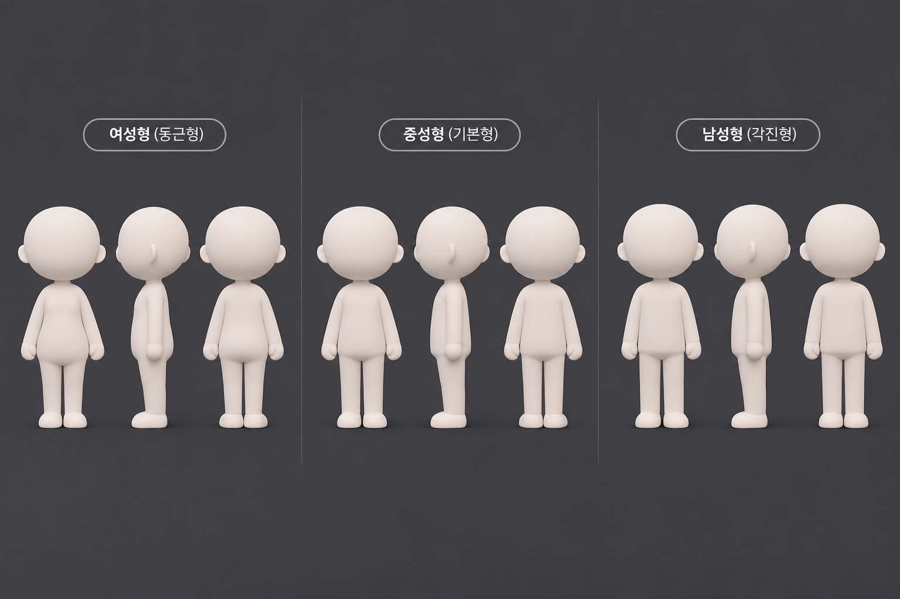
여성형·중성형·남성형으로 디자인한 짧은 몸의 세 방향 그림입니다. 팔은 몸통 가까이에 있습니다.
파일에 남은 저장 시각: 2026-11-04T09:01:57.029521+00:00. 실제 작업 완료 시각과는 다를 수 있습니다.
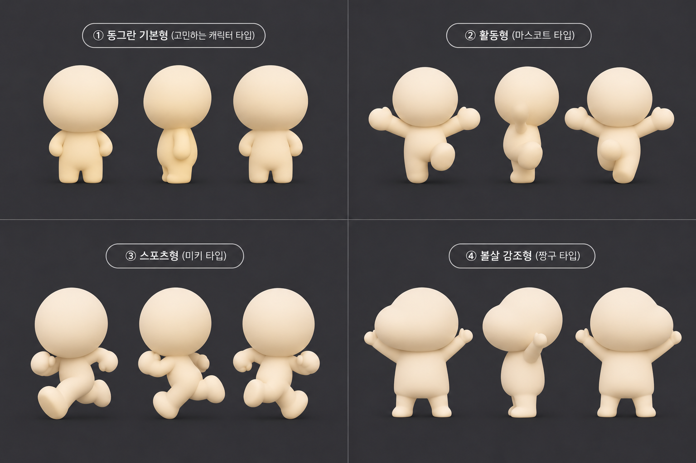
몸을 단순하게 만든 마스코트 네 종류입니다. 팔이 몸에 붙은 것과 벌어진 것이 섞여 있습니다. 이름만 다른 같은 그림도 있었습니다.
파일에 남은 저장 시각: 2026-11-04T09:05:54.539525+00:00. 실제 작업 완료 시각과는 다를 수 있습니다.
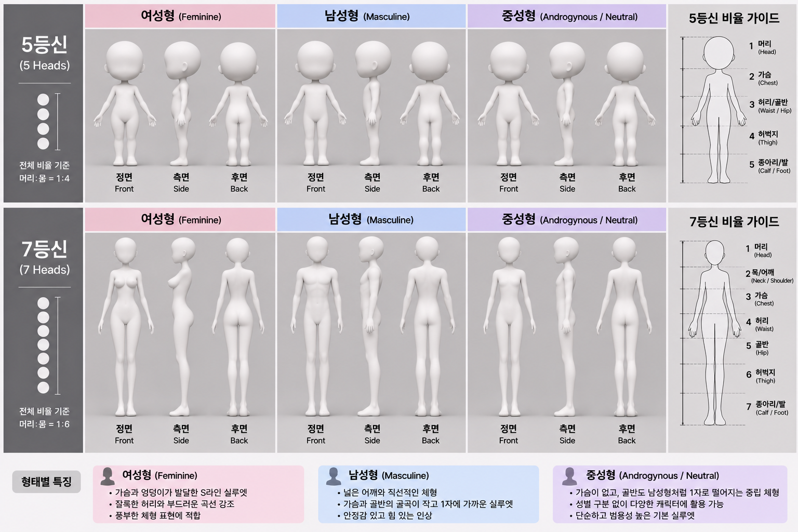
5등신·7등신과 세 가지 체형을 함께 비교합니다. 표기된 숫자와 실제 비율이 같은지는 별도 확인하지 않았습니다.
파일에 남은 저장 시각: 2026-11-04T08:35:19.171146+00:00. 실제 작업 완료 시각과는 다를 수 있습니다.
5등신·7등신 체형 비교입니다. 016번과 비슷하지만 완전히 같은 그림은 아닙니다.
파일에 남은 저장 시각: 2026-11-04T08:33:46.939091+00:00. 실제 작업 완료 시각과는 다를 수 있습니다.
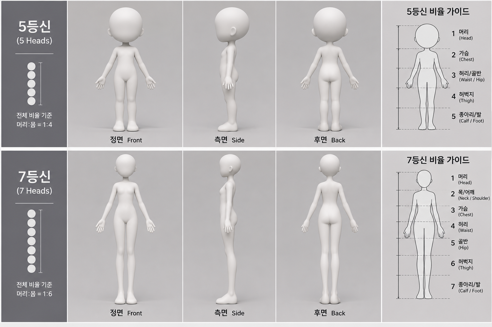
5등신·7등신이라고 적힌 몸을 앞·옆·뒤에서 보여줍니다.
파일에 남은 저장 시각: 2026-11-04T07:44:42.311965+00:00. 실제 작업 완료 시각과는 다를 수 있습니다.
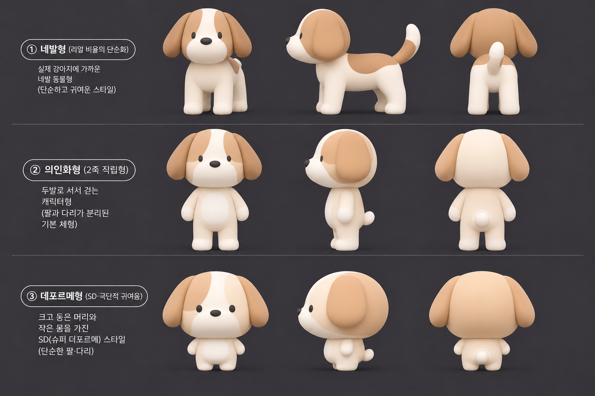
강아지 세 유형을 세 방향에서 보여줍니다. 눈·코·흰 무늬·갈색 귀가 남아 있고, 두 발형의 팔은 몸 가까이에 있습니다.
파일에 남은 저장 시각: 2026-11-04T09:09:42.620913+00:00. 실제 작업 완료 시각과는 다를 수 있습니다.
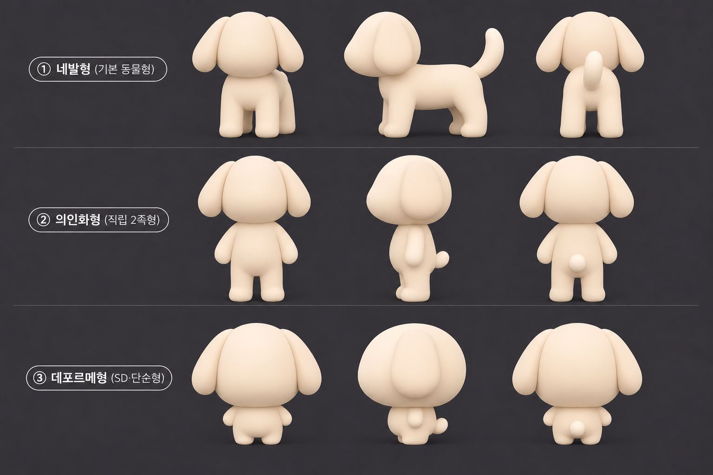
강아지의 눈·코·무늬를 뺀 모습입니다. 팔과 귀는 여전히 몸과 머리 가까이에 있습니다.
파일에 남은 저장 시각: 2026-11-04T09:10:53.926704+00:00. 실제 작업 완료 시각과는 다를 수 있습니다.
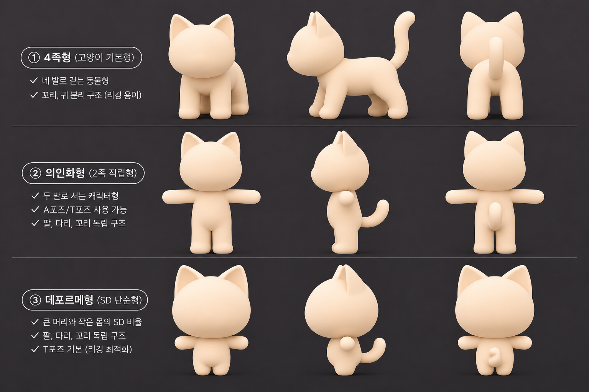
고양이 네 발형·두 발형·과장형의 그림입니다. 아래 두 유형은 팔을 T자로 벌렸습니다.
파일에 남은 저장 시각: 2026-11-04T09:22:04.262250+00:00. 실제 작업 완료 시각과는 다를 수 있습니다.
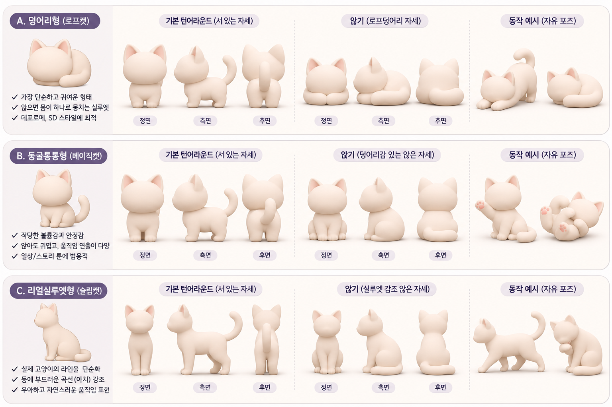
고양이의 체형과 여러 자세를 보여줍니다. 어떤 대화 요청의 결과인지 직접 연결하지 못했습니다.
파일에 남은 저장 시각: 2026-11-05T01:29:46.038409+00:00. 실제 작업 완료 시각과는 다를 수 있습니다.

큰 근육과 아주 작은 관절을 과장했습니다. 배 근육과 뼈 경계 등 작은 표현이 많이 남아 있습니다.
파일에 남은 저장 시각: 2026-11-04T08:49:06.226321+00:00. 실제 작업 완료 시각과는 다를 수 있습니다.
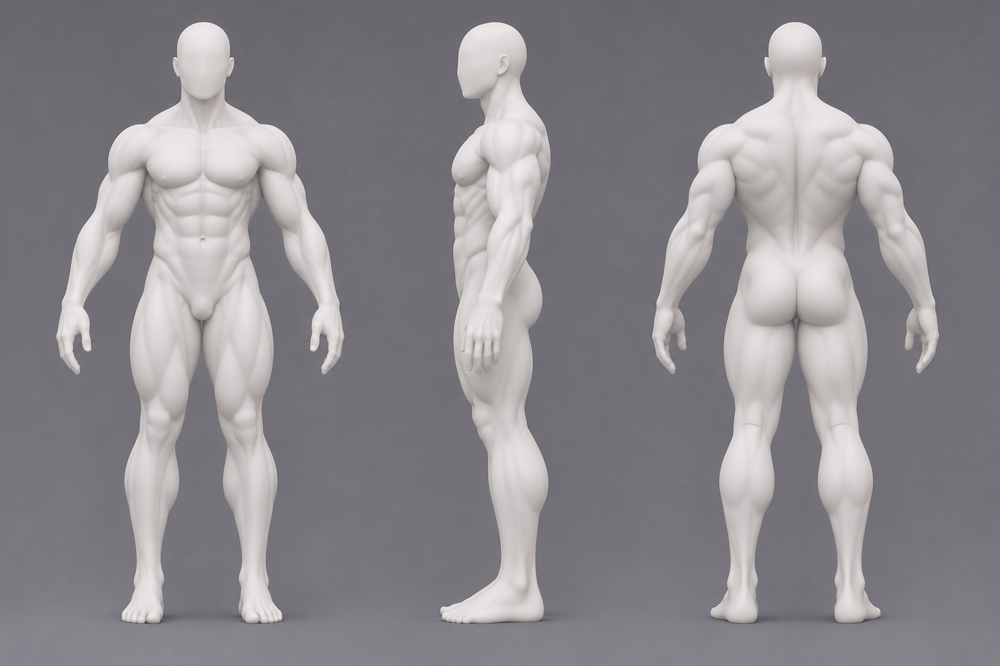
근육질 몸을 세 방향에서 보여줍니다. 비율은 상대적으로 자연스럽지만 근육의 세부 표현이 남아 있습니다.
파일에 남은 저장 시각: 2026-11-04T08:46:25.118286+00:00. 실제 작업 완료 시각과는 다를 수 있습니다.
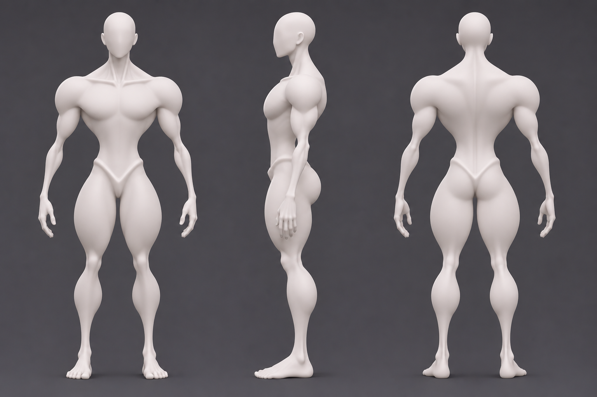
075번보다 배 근육의 구분선을 줄였습니다. 허벅지와 종아리를 매끈한 큰 덩어리로 나타냈습니다.
파일에 남은 저장 시각: 2026-11-04T08:51:41.676807+00:00. 실제 작업 완료 시각과는 다를 수 있습니다.

관절은 가늘고 쇄골·골반·무릎이 강하게 드러납니다. 파일 이름은 네 방향처럼 적혔지만 큰 그림은 세 방향입니다.
파일에 남은 저장 시각: 2026-11-04T08:54:44.336127+00:00. 실제 작업 완료 시각과는 다를 수 있습니다.
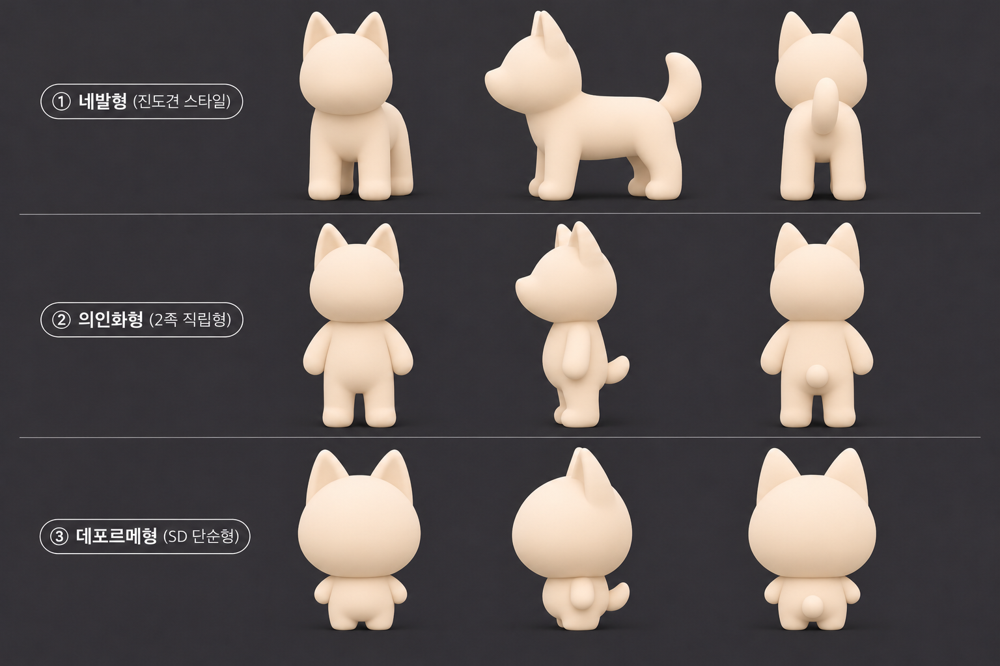
단색의 뾰족귀 강아지 세 유형입니다. 두 발형과 과장형의 팔은 몸 가까이에 있습니다.
파일에 남은 저장 시각: 2026-11-04T09:12:16.683492+00:00. 실제 작업 완료 시각과는 다를 수 있습니다.

079번보다 근육과 뼈의 돌출을 줄였습니다. 가는 허리와 관절 등 체형 차이는 남아 있습니다.
파일에 남은 저장 시각: 2026-11-04T08:57:02.521472+00:00. 실제 작업 완료 시각과는 다를 수 있습니다.
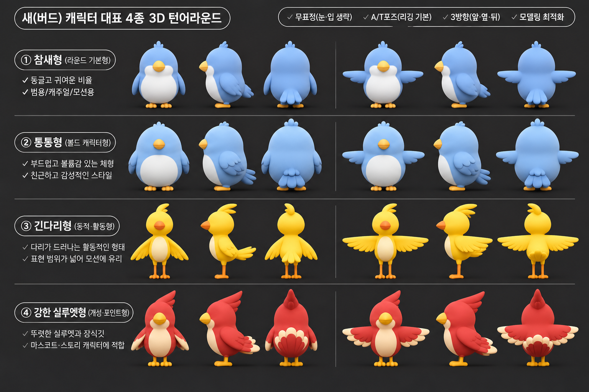
새 캐릭터 네 유형의 A자·T자 자세입니다. 색·눈·부리 등 새의 특징이 남아 있습니다.
파일에 남은 저장 시각: 2026-11-04T09:32:53.204436+00:00. 실제 작업 완료 시각과는 다를 수 있습니다.
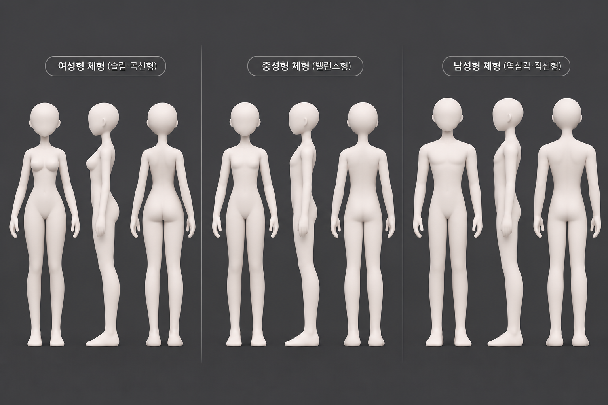
관절을 덜 구분한 여성형·중성형·남성형 모형입니다. 각 유형을 세 방향에서 보여줍니다.
파일에 남은 저장 시각: 2026-11-04T09:00:46.040541+00:00. 실제 작업 완료 시각과는 다를 수 있습니다.
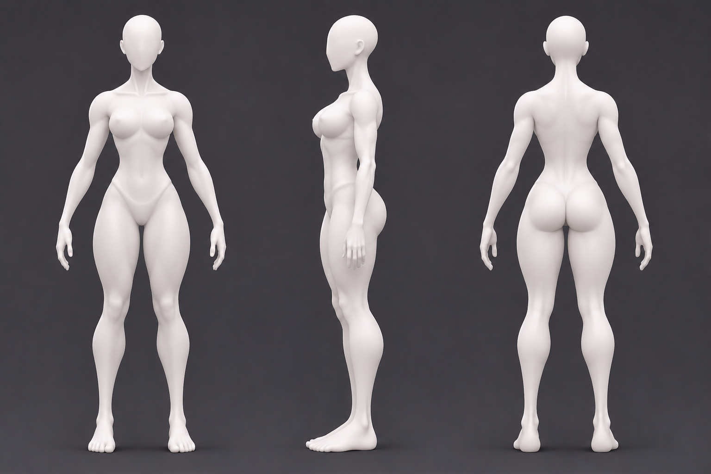
가는 관절과 몸의 굴곡을 강조한 모형입니다. 파일 이름이 비어 있어 이름만으로 용도를 판단하지 않았습니다.
파일에 남은 저장 시각: 2026-11-04T08:52:48.399375+00:00. 실제 작업 완료 시각과는 다를 수 있습니다.
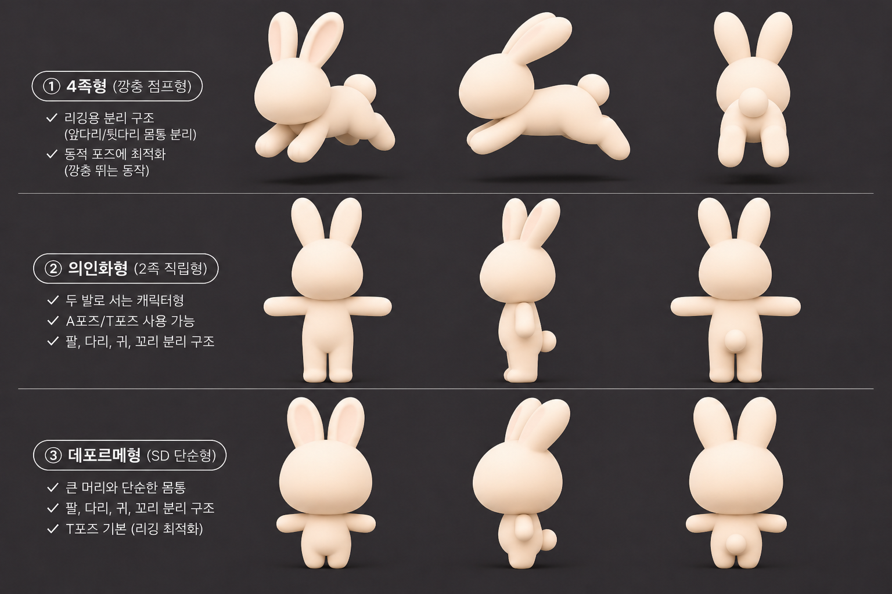
토끼가 뛰면서 다리가 몸에서 떨어진 모습과 두 발형 T자 자세입니다. 그림에서 떨어져 보여도 실제 3D 모형과 뼈대가 잘 분리되었다는 증거는 아닙니다.
파일에 남은 저장 시각: 2026-11-04T09:24:10.417624+00:00. 실제 작업 완료 시각과는 다를 수 있습니다.

펭귄의 눈과 코를 빼고 A자·T자 자세를 표시했습니다. 몸의 검정·크림색 무늬와 노란 발은 남았습니다.
파일에 남은 저장 시각: 2026-11-04T09:29:02.391292+00:00. 실제 작업 완료 시각과는 다를 수 있습니다.

펭귄의 여러 체형·표정·동작입니다. 눈·부리·몸의 색과 무늬가 보입니다.
파일에 남은 저장 시각: 2026-11-04T09:27:28.385186+00:00. 실제 작업 완료 시각과는 다를 수 있습니다.